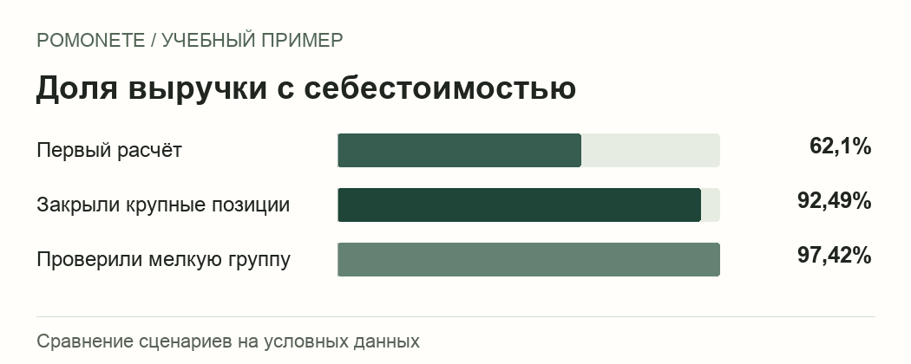

Пропуски себестоимости Яндекс Маркета. Как оценить риск для маржи
Считаем долю выручки, покрытую корректной себестоимостью, вместо подсчёта только незаполненных строк.
Таблица селлера Яндекс Маркета показывает высокий процент заполненных артикулов. Незаполненных немного, однако они могут давать заметную часть оборота. Проверим покрытие в деньгах, чтобы понять, можно ли уже использовать маржу для решения о бюджете.
Как связать стоимость и выручку
Сначала соберите выручку товарных строк и удержите тот же набор при присоединении себестоимости. Нулевая цена и пустое поле имеют разные значения. Ноль оставляйте только при подтверждённом правиле учёта и документе, который это объясняет.
Чтобы пересобрать расчёт «Доля выручки с себестоимостью» для своего магазина, перенесите в него исходные числа. В формуле A обозначает «выручка со связанной себестоимостью, ₽», B обозначает «вся выручка, ₽». Деление отвечает за долю, умножение на 100 переводит её в проценты. При нулевом знаменателе долю оставляют пустой. Запишите рядом период и охват каждого среза. Если для одной строки известна только оценка, оставьте пояснение непосредственно рядом с ней: по итоговой цифре источник уже не восстановить.
Доля выручки с себестоимостью = A ÷ B × 100
| Условие | Выручка со связанной себестоимостью, ₽ | Вся выручка, ₽ | Доля выручки с себестоимостью |
|---|---|---|---|
| Первый расчёт | 272 000 | 438 000 | 62,1% |
| Закрыли крупные позиции | 405 100 | 438 000 | 92,49% |
| Проверили мелкую группу | 426 700 | 438 000 | 97,42% |

В сценарии «Первый расчёт» в формулу подставляем выручка со связанной себестоимостью, ₽ = 272 000, вся выручка, ₽ = 438 000. Получается 62,1%. Большинство строк заполнено, но у нескольких дорогих позиций нет закупки.
В сценарии «Закрыли крупные позиции» в формулу подставляем выручка со связанной себестоимостью, ₽ = 405 100, вся выручка, ₽ = 438 000. Получается 92,49%. Документы по дорогим товарам найдены и привязаны к фактическим партиям.
В сценарии «Проверили мелкую группу» в формулу подставляем выручка со связанной себестоимостью, ₽ = 426 700, вся выручка, ₽ = 438 000. Получается 97,42%. Малые товары уточнили отдельно. Остаётся несопоставленная группа.
Если «Первый расчёт» взять за исходную точку, «Закрыли крупные позиции» меняет показатель «доля выручки с себестоимостью» на 30,39 п. п., а «Проверили мелкую группу» на 35,32 п. п.. Между двумя последними строками разница составляет 4,93 п. п. при вычитании второй из третьей. Смотрите, какой именно вход изменился между строками. Если менялись объём и условия одновременно, итог сравнения относится ко всему сочетанию.
Запишите отдельно результат по обычным условиям «Первый расчёт» (62,1%) и результат по уточнённым условиям «Проверили мелкую группу» (97,42%). Если обе оценки получились по одному правилу, следующий вопрос касается исходных данных. Проверьте, сохраняется ли направление сравнения, если вернуть одно нестабильное условие к исходному. Сценарии полезно привязывать к операционному событию, по которому можно проверить, что новый режим действительно произошёл.
Почему процент строк маскирует вклад
Редкие товары могут иметь высокую цену и несколько продаж с большой суммой. Заполнить много мелких изделий полезно, но это мало меняет неизвестные деньги. Сортировка по обороту помогает решить, какие покупки проверить первыми.
Проверьте переход от первичной записи до показателя «доля выручки с себестоимостью». Колонки «выручка со связанной себестоимостью, ₽, вся выручка, ₽» могут поступить разными путями. Пройдите пример, где дата и сумма видны в исходнике, до последней строки. Для этого подойдут исходная выгрузка, журнал загрузок и контрольные суммы. Затем возьмите один случай с исключением и убедитесь, что результат можно восстановить по сохранённому правилу.
Перед обновлением отчёта сохраните источник, параметры запроса, время выгрузки и число строк на каждом шаге. Сначала проверяют ключ и единицу наблюдения, потом сравнивают итоговые суммы. Одно и то же значение в двух строках может быть законным: совпадение суммы само по себе слабо доказывает дубль. Подключив справочник, проверьте, какие записи не сопоставились, и разнесите их по причинам до пересчёта показателя.
Что сильнее всего меняет результат
Продолжим на базе «Закрыли крупные позиции» (92,49%). Разложим расчёт на отдельные входы: «выручка со связанной себестоимостью, ₽», «вся выручка, ₽». Для удобства каждый опыт меняет одну величину примерно на десятую часть. Во всех остальных полях оставляем исходные числа. Для проверки более длинного периода шаги можно подобрать по фактическим колебаниям из истории.
- «Выручка со связанной себестоимостью, ₽» меняется с 405 100 на 364 590. При прежних остальных входах получается 83,24%, сдвиг составляет -9,25 п. п..
- «Вся выручка, ₽» меняется с 438 000 на 481 800. При прежних остальных входах получается 84,08%, сдвиг составляет -8,41 п. п..
Отметьте в рабочей таблице, что «выручка со связанной себестоимостью, ₽» показал сдвиг -9,25 п. п.. Переведите эту величину в цену решения: проверьте, достаточно ли её для смены выбранного режима. Если решение остаётся тем же, ограничьтесь контролем на очередной дате. При перевороте вывода запросите уточнение исходного значения и повторите опыт.
Если неизвестная себестоимость сосредоточена у новой партии, проверьте её также по остаткам. Устаревший справочник может давать ошибку на уже заполненных строках. Для нескольких дорогих примеров нужен контроль источника и даты, а не только наличие числа.
Что показывать вместе с маржой
Добавьте покрытие себестоимостью и оборот неизвестных групп. Для неподтверждённых строк покажите диапазон на основе аналогичной закупки с ясной отметкой. После пополнения документов замените оценки и проверьте, насколько изменился вывод о товаре.
При повторном импорте берите ту же исходную выборку и фиксируйте, какие записи действительно изменились. В стабильном отчёте сумма после второго прогона того же набора остаётся равной первой. Отложенные корректировки могут изменить поздний снимок, поэтому журнал версий пригодится для ответа на вопрос, когда возникло отличие. Дайте пользователю отчёта ссылку на строку, которую можно проверить вручную.
При еженедельной сверке поставьте рядом сценарий «Проверили мелкую группу» и реально наблюдавшееся значение. Если оценка стала систематически расходиться с результатом, назовите источник и предложите измерение меньшего масштаба. Для селлера Яндекс Маркета такой шаг важен, когда тот же показатель собирают разные сотрудники или несколько складов.